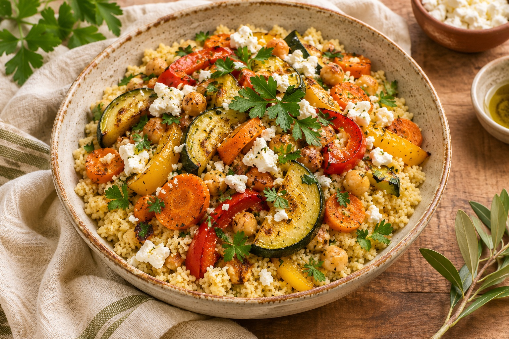
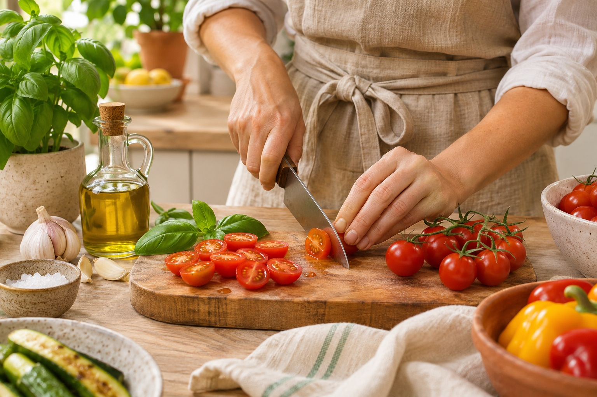

Entrée
Le plaisir de cuisiner ensemble
De belles recettes,
à partager simplement.
Découvrez des idées gourmandes et partagez vos recettes maison.
Rapide
Facile
Gourmand

Fait maison,
avec passion
avec passion

À propos de Saveurs Maison
Une cuisine généreuse, des recettes accessibles et le plaisir de partager. Saveurs Maison réunit les passionnés autour des saveurs du quotidien.
En savoir plusComment ça marche ?
01 Découvrez
Trouvez une recette selon vos envies.
02 Cuisinez
Suivez les ingrédients et les étapes.
03 Partagez
Publiez vos recettes et donnez votre avis.